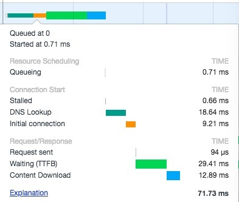
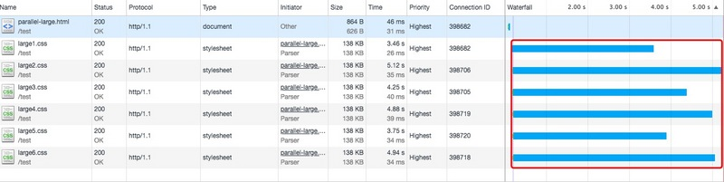
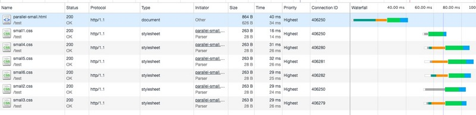
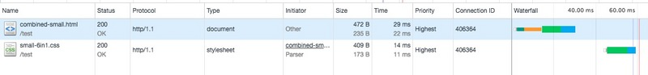
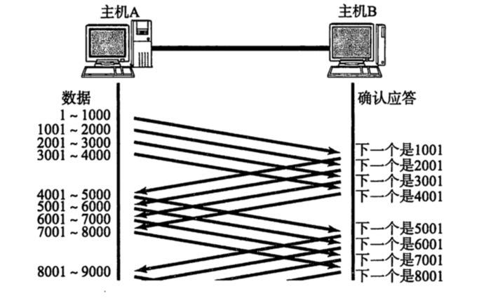
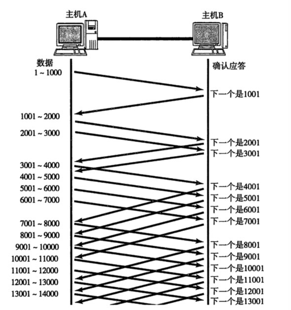

减少HTTP请求，是雅虎前端性能优化35条军规的第1条，2006年雅虎提出了这35条军规，从那以后，就深深地影响到了一批又一批的前端开发者，即使在12年后的今天，影响力依旧不减…..
但是，雅虎军规中还有1条是：拆分资源以最大化利用浏览器并行下载的能力。现在问题就来了，减少HTTP请求，但网页所需的资源并不能减少（否则网页就不再是之前的网页了），所以减少HTTP请求，主要是通过合并资源来实现的，一边是建议合并资源，一边是建议拆分资源，显然是有冲突的地方，那么到底该怎么做呢？网上有些文章也讨论过这个问题，但大多是停留在想当然的理论分析上，而且忽略了TCP传输机制的影响。今天，老干部就带大家一起用实验+理论，仔细探讨下这个问题。
HTTP请求过程
一个HTTP请求的主要过程是：
DNS解析(T1) -> 建立TCP连接(T2) -> 发送请求(T3) -> 等待服务器返回首字节（TTFB）(T4) -> 接收数据(T5)。
如下图所示，是Chrome Devtools中显示的一个HTTP请求，显示了HTTP请求的主要阶段，注意，Queueing阶段是请求在浏览器队列中的排队时间，并不计入HTTP请求时间。

从这个过程中，可以看出如果合并N个HTTP请求为1个，可以节省（N-1)* (T1+T2+T3+T4) 的时间。
但实际场景并没有这么理想，上面的分析存在几个漏洞：
- 浏览器会缓存DNS信息，因此不是每次请求都需要DNS解析。
- HTTP 1.1 keep-alive的特性，使HTTP请求可以复用已有TCP连接，所以并不是每个HTTP请求都需要建立新的TCP连接。
- 浏览器可以并行发送多个HTTP请求，同样可能影响到资源的下载时间，而上面的分析显然只是基于同一时刻只有1个HTTP请求的场景。
实验论证
我们来做4组实验，对比一个HTTP请求加载合并后的资源所需时间，和多个HTTP请求并行加载拆分的资源所需时间。每组实验所用资源的体积大小有显著差异。
实验环境：
- 服务器：阿里云ECS 1核 2GB内存 带宽1M
- Web服务器：Nginx (未启用Gzip)
- Chrome v66 隐身模式，禁用缓存
- Client 网络：wifi 带宽20M
实验代码地址：https://github.com/xuchaobei/examples/tree/master/minimizing%20http%20vs%20parallel%20http
实验 1
测试文件：
large1.css、large2.css … large6.css，每个文件141K;
large-6in1.css，由前面6个css文件合并而成，大小为846K。
parallel-large.html引用large1.css、large2.css … large6.css， combined-large.html引用large-6in1.css。
代码如下：
1 | // parallel-large.html |
1 | // combined-large.html |
分别刷新2个页面各10次，利用Devtools的Network计算CSS资源加载的平均时间。
注意事项
- large1.css、large2.css … large6.css的加载时间，计算方式为从第一个资源的HTTP请求发送开始，到6个文件都下载完成的时间，如图2红色框内的时间。
- 两个html页面不能同时加载，否则带宽为两个页面所共享，会影响测试结果。需要等待一个页面加载完毕后，再手动刷新加载另外一个页面。
- 页面两次刷新时间间隔在1分钟以上，以避免HTTP 1.1连接复用对实验的影响。

实验结果：
| large-6in1.css | large1.css、large2.css … large6.css
:———-:|:————–:|:——————:
平均时间(s) | 5.52 | 5.3
我们再把large1.css、large2.css … large6.css合并为3个资源large-2in1a.css、large-2in1b.css、large-2in1c.css，每个资源282K，在combined-large-1.html中引用这3个资源：
1 | // combined-large-1.html |
测试10次，平均加载时间为5.20s。
汇总实验结果如下：
| large-6in1.css | large1.css、large2.css … large6.css | large-2in1a.css、… large-2in1c.css
:———-:|:————–:|:——————:
平均时间(s) | 5.52 | 5.30 |5.20
从实验1结果可以看出，合并资源和拆分资源对于资源的总加载时间没有显著影响。实验中耗时最少的是拆分成3个资源的情况（5.2s），耗时最多的是合并成一个资源的情况(5.52s)，但两者也只不过相差6%。考虑到实验环境具有一定随机性，以及实验重复次数只有10次，这个时间差并不能表征3种场景有明显的时间差异性。
实验 2
继续增加css文件大小。
测试文件：
xlarge1.css、xlarge2.css 、xlarge3.css，每个文件1.7M；
xlarge-3in1.css，由前面3个css文件合并而成，大小为5.1M。
parallel-xlarge.html引用xlarge1.css、xlarge2.css 、xlarge3.css， combined-xlarge.html引用xlarge-3in1.css。
测试过程同上，实验结果：
| xlarge-3in1.css | xlarge1.css、xlarge2.css、xlarge3.css
:———-:|:—————:|:——————:
平均时间(s) | 37.72 | 36.88
这组实验的时间差只有2%，更小了，所以更无法说明合并资源和拆分资源的总加载时间有明显差异性。
实际上，理想情况下，随着资源体积变大，两种资源加载方式所需时间将趋于相同。
从理论上解释，因为HTTP的传输通道是基于TCP连接的，而TCP连接具有慢启动的特性，刚开始时并没有充分利用网络带宽，经过慢启动过程后，逐渐占满可利用的带宽。对于大资源而言，带宽总是会被充分利用的，所以带宽是瓶颈，即使使用更多的TCP连接，也不能带来速度的提升。资源越大，慢启动所占总的下载时间的比例就越小，绝大部分时间，带宽都是被充分利用的，总数据量相同（拆分资源导致的额外Header在这种情况下完全可以忽略不计），带宽相同，传输时间当然也相同。
实验 3
减小css文件大小。
测试文件：
medium1.css、medium2.css … medium6.css，每个文件9.4K；
medium-6in1.css，由前面6个css文件合并而成，大小为56.4K。
parallel-medium.html引用medium1.css、medium2.css … medium6.css， combined-medium.html 引用 medium-6in1.css。
实验结果：
| medium-6in1.css | medium1.css、medium2.css … medium6.css
:———-:|:—————:|:——————:
平均时间(ms) | 34.87 | 46.24
注意单位变成ms
实验3的时间差是33%，虽然数值上只差12ms。先不多分析，继续看实验4。
实验 4
继续减小css文件大小，至几十字节级别。
测试文件：
small1.css、small2.css … small6.css，每个文件28B；
small-6in1.css，由前面6个css文件合并而成，大小为173B。
parallel-medium.html引用small1.css、small2.css … small6.css， combined-medium.html 引用 small-6in1.css。
实验结果：
| small-6in1.css | small1.css、small2.css … small6.css
:———-:|:—————:|:——————:
平均时间(ms) | 20.33 | 35
实验4的时间差是72%。
根据实验3和实验4，发现当资源体积很小时，合并资源和拆分资源的加载时间有了比较明显的差异。图3和图4是实验4中的某次测试结果的截图，当资源体积很小时，数据的下载时间（图中水平柱的蓝色部分所示）占总时间的比例就很小了，这时候影响资源加载时间的关键就是DNS解析(T1) 、 TCP连接建立(T2) 、发送请求(T3) 和等待服务器返回首字节（TTFB）(T4) 。但同时建立多个HTTP连接本身就存在额外的资源消耗，每个HTTP的DNS查询时间、TCP连接的建立时间等也存在一定的随机性，这就导致并发请求资源时，出现某个HTTP耗时明显增加的可能性变大。如图3所示，small1.css加载时间最短（16ms），small5.css加载时间最长(32ms)，两者相差了1倍，但计算时间是以所有资源都加载完成为准，这种情况下，同时使用多个HTTP请求就会导致更大的时间不均匀性和不确定性，表现结果就是往往要比使用一个HTTP请求加载合并后的资源慢。


更复杂的情况
对于小文件一定是合并资源更快吗？
其实未必，在一些情况下，合并小文件反而有可能明显增加资源加载时间。
再说些理论的东西。为了提高传输效率，TCP通道上，并不是发送方每发送一个数据包，都要等到收到接收方的确认应答（ACK）后，再发送下一个报文。TCP引入了”窗口“的概念，窗口大小指无需等待确认应答而可以继续发送数据的最大值，例如窗口大小是4个MSS（Maximum Segment Size，TCP数据包每次能够传输的最大数据分段），表示当前可以连续发送4个报文段，而不需要等待接收方的确认信号，也就是说，在1次网络往返（round-trip）中完成了4个报文段的传输。如下图所示（MSS为1，窗口大小为4），1 - 4000 数据是连续发送的，并没有等待确认应答，同样的，4001 - 8000也是连续发送的。请注意，这只是理想情况下的示意图，实际情况要比这里更复杂。

在慢启动阶段，TCP维护一个拥塞窗口变量，这个阶段窗口的大小就等于拥塞窗口，慢启动阶段，随着每次网络往返，拥塞窗口的大小就会翻一倍，例如，假设拥塞窗口的初始大小为1，拥塞窗口的大小变化为：1，2，4，8……。如下图所示。

实际网络中，拥塞窗口的初始值一般是10，所以拥塞窗口的大小变化为：10，20，40 … ，MSS的值取决于网络拓扑结构和硬件设备，以太网中MSS值一般是1460字节，按每个报文段传输的数据大小都等于MSS计算（实际情况可以小于MSS值），经过第1次网络往返后，传输的最大数据为14.6K，第2次后，为(10+20) 1.46 = 43.8K， 第3次后，为(10+20+40) 1.46 = 102.2K。
根据上面的理论介绍，实验4中，不管是合并资源，还是拆分资源，都是在1次网络往返中传输完成。但实验3，拆分后的资源大小为9.4K，可以在1次网络往返中传输完成，而合并后的资源大小为56.4K，需要3次网络往返才能传输完成，如果网络延时很大（例如1s），带宽又不是瓶颈，多了两次网络往返将导致耗时增加1s，这时候合并资源就可能得不偿失了。实验3并没有产生这个结果的原因是，实验中网络延时是10ms左右，由于数值太小而没有对结果产生明显影响。
总结
对于大资源，是否合并对于加载时间没有明显影响，但拆分资源可以更好的利用浏览器缓存，不会因为某个资源的更新导致所有资源缓存失效，而资源合并后，任一资源的更新都会导致整体资源的缓存失效。另外还可以利用域名分片技术，将资源拆分部署到不同域名下，既可以分散服务器的压力，又可以降低网络抖动带来的影响。
对于小资源，合并资源往往具有更快的加载速度，但在网络带宽状况良好的情况下，因为提升的时间单位以ms计量，收益可以忽略。如果网络延迟很大，服务器响应速度又慢，则可以带来一定收益，但在高延迟的网络场景下，又要注意合并资源后可能带来网络往返次数的增加，进而影响到加载时间。
其实，看到这里，是合是分已经不重要了，重要的是我们要知道合分背后的原理是什么，和业务场景是怎样的。